The University of Sydney
AIS Reference Architecture
Core components and integration patterns for imaging platforms across the Australian Imaging Service federation.
Introduction
The Australian Imaging Service (AIS) is a national biomedical imaging platform providing end-to-end capabilities for imaging data ingestion, management, analysis, and sharing. Delivered as an open-source platform and operated as a federation of institutional nodes, AIS enables a cohesive national imaging data fabric built on consistent, reusable architectural patterns.
The AIS reference architecture defines the core components and integration principles that support data provenance, reproducibility, and interoperability across sites, while remaining intentionally non-prescriptive to allow institutions to align deployments with their local environments.
Purpose
The AIS Reference Architecture provides a high-level, standardised blueprint that outlines recommended architectural patterns and best practices for imaging platforms within AIS. It is intended to inform and guide solution design, rather than mandate detailed implementation or governance controls, enabling flexibility while promoting architectural consistency across AIS implementations.
Scope
- In scope
- Identity and access patterns
- Governance and provisioning
- Imaging Data Ingestion and Processing
- Storage, compute, and collaboration
- Core imaging platforms (e.g. XNAT)
- Out of scope
- Project-specific configurations
- Environment-specific infrastructure sizing
- Operational runbooks
AIS Imaging Platform Reference Architecture
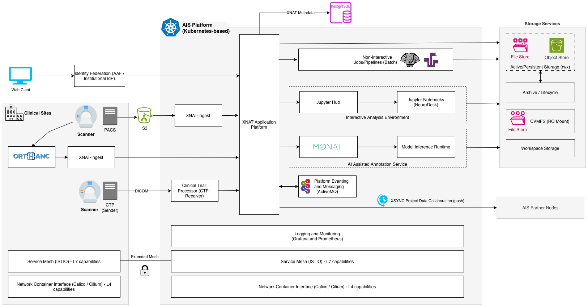
Identity and Access Management
Authentication and Federation
AIS supports multiple XNAT authentication providers, including Local Database (LocalDB), LDAP, and OpenID Connect (OIDC), via XNAT’s authentication provider framework.
To support cross-institutional research collaboration, AIS recommends Australian Access Federation (AAF) OpenID Connect as the primary authentication mechanism for interactive user access. This enables federated authentication for internal and external researchers while reducing the need for local account management.
AIS distinguishes between interactive user authentication and system-to-system authentication. While OIDC is used for user access, automated integrations authenticate using local service accounts and API tokens.
Service-to-Service Authentication
Even when an OpenID Connect (OIDC) provider is configured for automatic user provisioning, XNAT continues to support the explicit creation of local user accounts for non-interactive access, such as API integrations, automation, and scripting.
Authorised local service accounts can be granted permissions to provision and manage XNAT resources and authenticate using API tokens (User Alias Tokens), independently of OIDC-based user authentication.
| Integration Type | Recommended Authentication |
|---|---|
| Provisioning APIs | Service account + API token (User Alias Token) |
| Automation / CI pipelines | Service account + API token |
| Node federation | Service account + API token |
| DICOM import service | Service account + API token |
| User Access (SSO) | OIDC (AAF / enterprise IdP) |
Reference: wiki.xnat.org/xnat-api/user-alias-token-api
AIS adopts a clear separation between interactive user authentication and system-to-system authentication.
AIS recommends Australian Access Federation (AAF) OpenID Connect for all interactive user access, while reserving local XNAT service accounts for non-interactive system integrations.
All automated access to XNAT APIs within AIS SHOULD use API tokens issued to dedicated service accounts rather than user credentials.
Authorisation
XNAT uses role-based access control (RBAC), with permissions primarily managed at the project level.
- Manage access through project membership, not site-level permissions.
- Separate platform administration from research project roles.
Governance and Provisioning
Projects
Research projects may be created directly within XNAT. When research projects originate in external systems, they can be provisioned into XNAT using XNAT’s exposed provisioning APIs. Refer to the XNAT Data Management API for automated project creation.
At this stage, AIS does not enforce project-level research governance controls. Institutions that require projects to be linked to ethics approvals, grants, or research data management plans are expected to manage these governance processes externally and provision AIS projects only after the required approvals and linkages have been satisfied, typically via automated provisioning mechanisms.
Although XNAT enforces fine-grained dataset-level access controls within a project scope, these restrictions do not extend to interactive and batch compute environments. Consequently, users with limited data access within a project may gain access to all project data during analysis workflows.
Collaborators
AIS adopts a project-centric collaboration model to enable secure, cross-institutional research while preserving institutional autonomy. Collaborators are granted access at the project level, with authentication typically provided through federated identity (e.g. AAF) and authorisation enforced locally via role-based access control.
Collaboration is explicitly scoped, auditable, and does not imply data ownership transfer. Data remains under the control of the hosting institution unless shared through approved workflows.
- Collaboration should be managed through project-level roles, not shared accounts (local DB accounts).
- External collaborators should authenticate using federated identity.
Imaging Data Ingestion
XNAT Native DICOM Ingestion
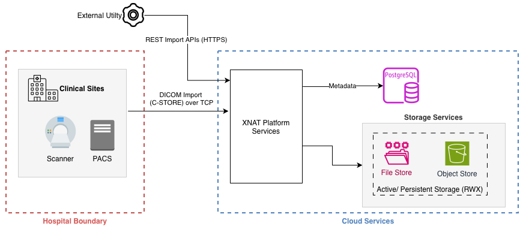
XNAT provides native DICOM ingestion capabilities, allowing clinical scanners or PACS systems to send imaging studies directly to XNAT using the DICOM C-STORE protocol. XNAT also exposes REST APIs for dataset import, enabling DICOM files to be uploaded programmatically over HTTPS by ingestion tools or research workflows.
While direct integration with scanners or PACS is supported, the native ingestion mechanism provides limited retry handling if the destination system is temporarily unavailable. In addition, when AIS is hosted in the cloud, sending DICOM data directly from clinical systems may result in non-anonymised patient information traversing external networks.
AIS therefore recommends performing anonymisation at the source before transmitting imaging data to XNAT, typically through an ingestion gateway such as Clinical Trial Processor (CTP) or a processing service.
Security and Authentication: native ingestion
The table below summarises the system interactions involved in this ingestion pathway and the associated transport security and authentication mechanisms.
| Source | Destination | Interface / Protocol | Transport Security | Authentication | Recommended Controls |
|---|---|---|---|---|---|
| Clinical Scanners / PACS | XNAT | DICOM C-STORE | Network-level security, optionally DICOM TLS | Endpoint configuration using AE Title, host, and port, combined with network allow-listing | Restrict connections to approved clinical systems using firewall rules and network segmentation |
| External Utilities | XNAT | XNAT REST Import APIs | HTTPS (TLS encryption) | Service account authentication or API tokens | Use a dedicated service account for ingestion and restrict API access to authorised hosts |
Clinical Trial Processor (CTP)
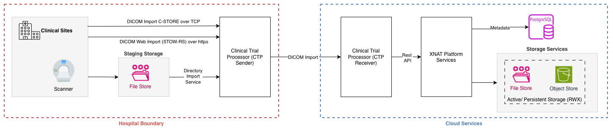
Clinical imaging studies are generated and stored in clinical PACS systems, which act as the source of truth for patient imaging data. While XNAT provides native DICOM ingestion capabilities, AIS uses the Clinical Trial Processor (CTP) as a DICOM gateway between PACS and XNAT.
CTP receives DICOM images from PACS, performs validation and de-identification in accordance with research governance requirements, applies routing and buffering logic, and reliably forwards the processed datasets to XNAT using a resilient store-and-forward model for research use.
CTP supports receiving DICOM images via C-STORE and STOW-RS protocols.
At the clinical site, the Clinical Trial Processor (CTP) is typically deployed within the same network segment as the imaging scanner and PACS to enable efficient ingestion of imaging data. Where the clinical site is external to the AIS environment, a publicly accessible CTP endpoint is provided within the AIS platform to receive data from the clinical site CTP. In this model, the clinical CTP securely transfers imaging datasets to the AIS CTP over HTTPS.
Controlled Ingestion and Decoupling (CTP Receiver)
In the AIS ingestion architecture, imaging data is transferred from clinical environments into the platform using CTP-based workflows. While CTP Sender provides store-and-forward capability at the clinical boundary, introducing a CTP Receiver within AIS establishes a controlled ingestion layer before data reaches XNAT. This helps improve security, reliability, and operational control by separating external systems from the core platform.
- Introduces a controlled AIS-side ingestion boundary, decoupling clinical systems from XNAT
- Minimises proliferation of XNAT credentials by limiting their use within AIS
- Provides buffering and retry isolation so unstable network transfers do not directly impact XNAT
- Enables rate-controlled ingestion to protect XNAT from burst loads and retry storms
- Improves ingestion stability by staging data closer to the platform for more reliable transfer
Security and Authentication: CTP
The table below summarises the key interactions between clinical imaging systems, the CTP ingestion gateway, and the AIS platform, together with the protocols and security mechanisms used to protect these communications.
| Source | Destination | Interface / Protocol | Transport Security | Authentication | Recommended Controls |
|---|---|---|---|---|---|
| Clinical Scanners / PACS | CTP | DICOM C-STORE | Network-level security, optionally DICOM TLS | Endpoint configuration using AE Title, host, and port, combined with network allow-listing | Restrict connections to approved clinical systems using firewall rules and network segmentation |
| Clinical Systems | CTP | DICOMweb STOW-RS | HTTPS (TLS encryption) | Client certificates or API authentication | Restrict endpoint access to approved systems and enable TLS for all external connections |
| CTP | XNAT | XNAT REST Import APIs | HTTPS (TLS encryption) | Service account authentication or API tokens | Use a dedicated service account for ingestion and restrict API access to authorised hosts |
Bulk Imaging Data Ingestion (XNAT-Ingest)
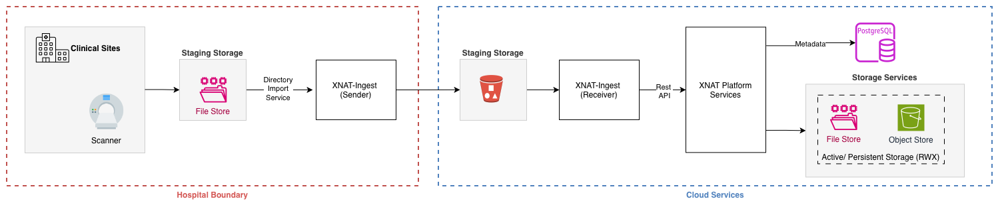
In addition to real-time DICOM ingestion via Clinical Trial Processor (CTP), AIS provides a bulk ingestion pathway to support large clinical imaging datasets and non-DICOM image resources. This pathway is implemented through the XNAT-Ingest service.
This pattern is intended for staged, high-volume, and file-based ingestion scenarios where direct HTTP-based upload or real-time routing is not suitable. Data is staged in storage, processed into structured sessions, optionally enriched or de-identified, and uploaded to XNAT using an efficient, batch-oriented mechanism.
The bulk ingestion pattern provides the following capabilities:
- Ingestion from object storage (e.g. S3) or shared filesystem locations
- Support for large datasets and high file volumes
- Session-oriented organisation of imaging data
- Optional metadata enrichment and de-identification
- Efficient batch-based upload to XNAT
- Data integrity validation through checksum verification
- Idempotent processing to prevent duplicate ingestion
- Automation support for scheduled or continuous execution
XNAT-Ingest is designed to support a broad range of imaging and research data formats. File type support is provided through the Arcana FileFormats framework (including fileformats, fileformats-medimage, and vendor-specific extensions such as fileformats-vendor-siemens).
Security and Authentication: XNAT-Ingest
XNAT-Ingest enables programmatic bulk upload of imaging datasets to AIS using XNAT REST APIs. The table below summarises the interaction between ingestion clients and the AIS platform, together with the associated transport security and authentication mechanisms.
| Source | Destination | Interface / Protocol | Transport Security | Authentication | Recommended Controls |
|---|---|---|---|---|---|
| XNAT-Ingest | XNAT | XNAT REST Import APIs | HTTPS (TLS encryption) | Service account authentication or API tokens | Use a dedicated service account for ingestion and restrict API access to authorised hosts |
- Use XNAT-Ingest as the primary ingestion tool for non-DICOM data, with a strategic direction to expand its use across broader ingestion scenarios
- Suitable for bulk uploads, research datasets, and non-DICOM data
Edge Data Capture and Ingestion
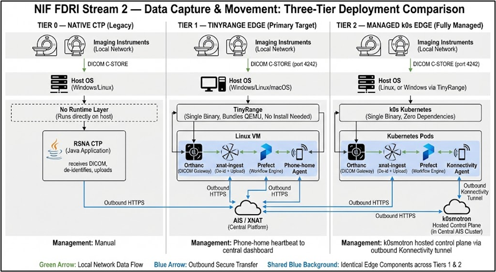
Orthanc is a lightweight, open-source DICOM server used to receive, store, and manage medical imaging data (like CT, MRI, X-ray).
XNAT-Ingest is a Python-based ingestion pipeline, while Prefect is a Python-native workflow orchestrator. Prefect coordinates and manages the execution of XNAT-Ingest pipelines, providing scheduling, retries, and observability without being part of the ingestion process itself.
Orthanc acts as the DICOM ingestion endpoint, handling receipt and storage of imaging data. Processing logic resides within XNAT-Ingest, while Prefect orchestrates when and how these processing workflows are executed.
Tier Overview
| Tier 0: Native CTP | Tier 1: TinyRange Edge | Tier 2: Managed k0s Edge | |
|---|---|---|---|
| What | Existing RSNA CTP Java client | TinyRange VM running Orthanc + edge tools | k0s Kubernetes cluster with Orthanc + edge tools |
| Runs on | Directly on host (Windows/Linux) | Any OS; single binary, bundles own VM | Linux bare metal or inside TinyRange VM |
| Install requires | Java install, IT assistance | Copy one file, no admin needed | IT engagement, k0s binary install |
| DICOM gateway | CTP | Orthanc | Orthanc (Helm chart) |
| De-identification | CTP anonymiser | xnat-ingest | xnat-ingest |
| Upload to XNAT | CTP HttpExportService | xnat-ingest | xnat-ingest |
| Generic data | Not supported | Prefect + directory watcher | Prefect + directory watcher |
| Fleet management | Manual | Phone-home agent (outbound HTTPS) | k0smotron (hosted control plane, outbound-only) |
| Updates | Manual | VM image update / phone-home triggered | k0s Autopilot + Helm via GitOps |
| Best for | Sites already running CTP | Hospital/restricted sites, Windows hosts | High-throughput sites with IT support |
| Target sites | Legacy installs | PA Hospital, small LHD sites, new deployments | UQ CAI, USyd, Newcastle |
Storage, Data Management and Exchange
XNAT uses PostgreSQL as its primary metadata store. All imaging metadata, project configuration, user permissions, and resource catalogues are stored in the PostgreSQL database. Imaging files are stored on the filesystem archive and referenced by path from the database.
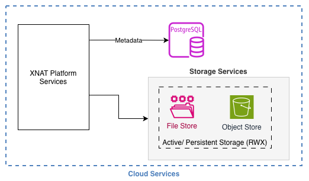
For cloud deployments, AIS recommends using a managed PostgreSQL service to leverage built-in capabilities such as high availability, automated backups, patch management, and operational resilience.
For deployments within a hospital or on-premises environments where managed cloud database services may not be available, AIS recommends deploying a cloud-native PostgreSQL instance within the Kubernetes cluster. This approach maintains consistency with the containerised platform architecture and enables simplified lifecycle management through Kubernetes orchestration.
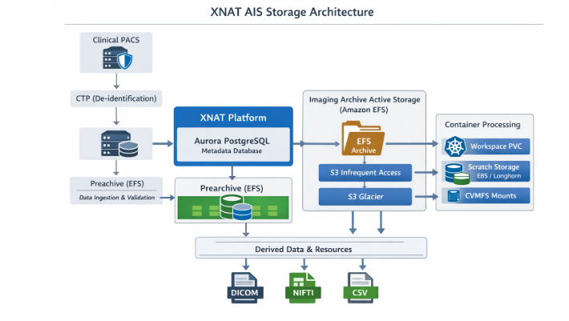
Imaging Data Storage and Lifecycle
Imaging datasets generated by clinical imaging systems are stored within the platform archive and organised according to research projects, subjects, and imaging sessions. The storage architecture separates persistent imaging datasets from temporary ingestion and processing storage to preserve data integrity and support scalable analysis workflows.
The archive storage layer provides persistent storage for imaging datasets and derived outputs associated with research projects. This storage must support scalable capacity, concurrent access by platform services, and POSIX-compatible filesystem semantics. In cloud deployments, shared network filesystems such as Amazon EFS are recommended.
The ingestion storage layer provides temporary staging for newly received imaging datasets before integration into the archive.
The processing storage layer provides workspace storage for analysis pipelines and interactive notebook environments. In AIS deployments, user and pipeline workspaces are provided through Kubernetes persistent volumes, with Longhorn PVCs recommended for temporary processing workloads.
The temporary storage layer supports short-lived platform data such as caches and intermediate processing artefacts.
Archived imaging datasets are treated as immutable research records. Analysis workflows operate on temporary processing workspaces and publish derived outputs back to the archive. Long-term lifecycle management of imaging datasets is implemented through storage infrastructure lifecycle policies, allowing inactive datasets to be migrated to lower-cost storage tiers while remaining accessible to the platform when required.
Collaboration and Data Exchange
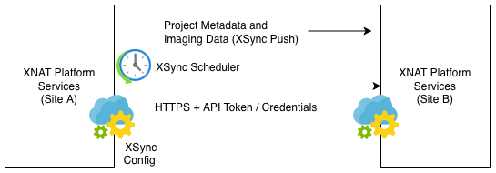
XNAT supports synchronisation of projects and imaging datasets between independent XNAT deployments using the XSync framework. This capability enables collaborating organisations to replicate selected research datasets across multiple XNAT platforms.
In this model, a source XNAT instance initiates a scheduled synchronisation job that pushes project metadata, subjects, experiments, and associated imaging resources to a destination XNAT instance. Communication between platforms occurs over secure HTTPS connections using XNAT REST APIs.
Only projects explicitly configured for synchronisation are replicated. This allows participating organisations to selectively share datasets while maintaining local governance over their XNAT deployments.
XSync is typically used to support multi-site research collaborations, federated imaging repositories, and data sharing between institutional XNAT platforms.
AIS recommends that, when moving large imaging datasets across sites or networks, high-performance data transfer technologies should be considered. Common options used in research environments include Globus and IBM Aspera.
These tools operate outside the XNAT platform and are typically used to transfer datasets to a staging or storage location, from which XNAT ingestion workflows such as CTP or bulk ingestion tools process the data.
Compute and Analysis Services
The AIS ecosystem provides integrated image analysis capabilities through the XNAT platform to support imaging research workflows. These capabilities enable researchers to process, analyse, and derive insights from imaging datasets managed within XNAT. Analysis workloads may be executed either as automated batch pipelines or through interactive analysis environments.
Batch Jobs (Non-Interactive)
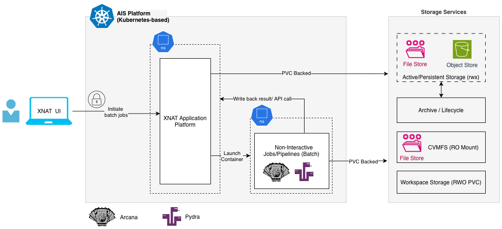
Non-interactive analysis workloads are executed via the XNAT Container Service plugin, which enables containerised pipelines to be triggered by user actions or platform events. These workloads run as Kubernetes batch jobs on the AIS platform, with results written back to XNAT.
AIS enhances this execution model by adopting ARCANA and Pydra as the preferred framework for defining and running analysis pipelines. Rather than executing ad-hoc containers, pipelines are defined using ARCANA, with Pydra managing workflow execution and task dependencies. These pipelines are packaged as container images and executed via the XNAT Container Service, ensuring consistency and reproducibility across the platform.
To support container-based batch processing, the following components are required:
- A container execution environment capable of running workloads (e.g. Kubernetes)
- A container image registry to host approved analysis images
- Container definitions compatible with XNAT Container Service for pipeline execution
Arcana: A Python workflow framework that defines and manages end-to-end analysis pipelines, handling data retrieval, organisation, and storage across repositories such as XNAT.
Pydra: A lightweight Python-based workflow execution engine that orchestrates tasks, dependencies, and parallel execution for scalable and reproducible data processing pipelines.
AIS recommends standardising analysis pipelines using ARCANA and Pydra, with workflows packaged as versioned container images and executed via XNAT Container Service. Pipelines should be scheduled as Kubernetes jobs within a dedicated namespace to ensure isolation from core platform services. A centrally managed container image repository should be maintained to host and govern approved analysis pipelines.
AIS recommends deploying XNAT within a Kubernetes-based container platform and using the same Kubernetes environment to execute batch processing workloads. Batch jobs should be scheduled as Kubernetes jobs and executed within a dedicated Kubernetes namespace to ensure operational isolation from core platform services. A shared container image repository accessible to the Kubernetes environment should be maintained to host approved analysis pipelines used by the platform.
Reference: wiki.xnat.org/container-service
Reference: wiki.xnat.org/documentation/adding-pipelines-to-your-project
Reference: Arcana v0.8.5
Reference: Pydra v1.0a9
Interactive Jobs
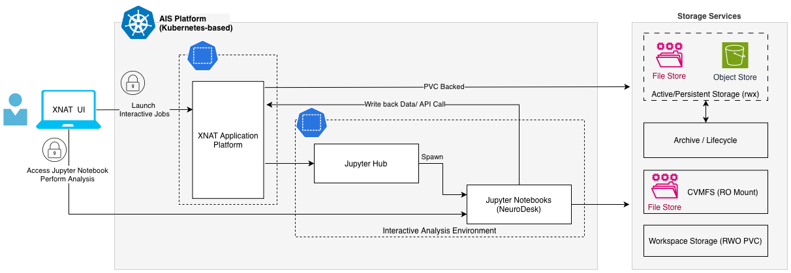
Interactive analysis capabilities are provided through integration between XNAT and JupyterHub. Researchers can launch interactive notebook environments from the XNAT user interface to explore and analyse imaging datasets managed by the platform.
When an interactive session is initiated, XNAT communicates with JupyterHub to provision a dedicated notebook server for the user. JupyterHub manages authentication and session lifecycle, and spawns a containerised notebook environment for each user. Within this environment, researchers can open multiple notebooks and run analysis code while accessing datasets stored in XNAT and associated platform storage services.
AIS recommends deploying JupyterHub within the same Kubernetes environment that hosts the XNAT platform. Running both services within the same Kubernetes cluster simplifies integration between XNAT and JupyterHub, enables direct access to platform storage, and reduces operational complexity.
Interactive notebook environments should be provisioned as containerised workloads within Kubernetes, with each user receiving an isolated notebook server instance. Where GPU-based analysis is required, GPU resources should be allocated to the user notebook workloads rather than to the JupyterHub service itself.
Analysis Services: MONAI Label
MONAI Label is an open-source AI-assisted image annotation framework used to create annotated datasets and develop machine learning models for medical imaging. It provides intelligent annotation capabilities that generate segmentation or annotation suggestions, helping users produce high-quality labelled datasets while reducing manual effort.
Within the AIS platform, MONAI Label is deployed as a backend AI annotation service integrated with the XNAT imaging platform. It performs model inference and supports model training workflows on imaging datasets managed by XNAT.
MONAI Label Invocation Modes
MONAI Label services can be invoked through multiple interaction patterns depending on the analysis workflow and client application used. Within AIS, the MONAI Label server may be triggered through three primary integration modes:
- Interactive annotation via the XNAT OHIF Viewer, where users request AI-assisted segmentation while reviewing imaging studies in the browser.
- Interactive annotation from other supported client applications, such as 3D Slicer, QuPath, or CVAT, typically accessed from researcher analysis environments (for example Jupyter workspaces).
- Automated processing workflows, where MONAI Label inference is invoked programmatically through XNAT Container Service jobs to support event-driven or batch processing of imaging datasets.
These invocation modes enable both interactive annotation workflows and automated AI analysis pipelines within the AIS imaging platform.
Interactive AI Inference (OHIF Viewer)
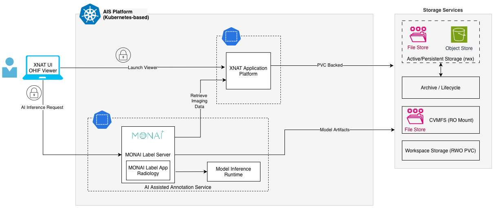
In the AIS platform, researchers interact with imaging datasets through the OHIF viewer, which invokes MONAI Label to generate AI-assisted segmentation or annotation suggestions.
MONAI Label retrieves imaging data from XNAT, loads the required model artefacts, performs inference, and returns the results to the viewer for review and refinement. Derived outputs are stored alongside the imaging dataset within the platform.
By default, MONAI Label hosts both inference and training logic within the service. Where greater scale or specialised GPU resources are required, model execution may be externalised to dedicated inference services.
Automated AI Inference (XNAT-Triggered)
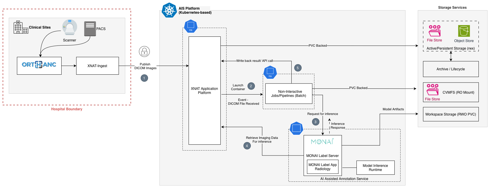
Automated inference enables AI analysis to be executed without direct user interaction as part of the imaging data ingestion workflow. When a new imaging dataset is received by XNAT (for example through DICOM ingestion pipelines), the platform generates an event indicating that new imaging data is available.
This event triggers a processing workflow using the XNAT Container Service plugin, which launches a containerised batch job within the platform’s container environment. The job retrieves the required imaging data from XNAT and invokes the MONAI Label service to perform model inference.
The MONAI Label service processes the dataset using the configured model and generates derived outputs such as segmentation masks or annotations. Once processing completes, the results are written back to the XNAT platform through its APIs, where they are stored alongside the original imaging dataset and can be accessed for further analysis or review.
This event-driven approach enables scalable batch processing of newly ingested imaging studies, allowing AI models to be applied automatically as datasets arrive in the platform.
Automated AI Inference: MONAI with Arcana and Pydra RECOMMENDED
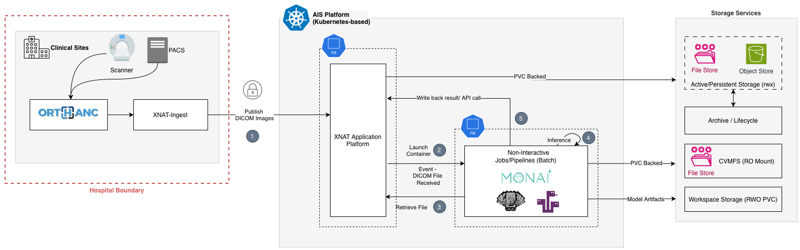
AIS supports automated AI inference through non-interactive batch workflows executed on the Kubernetes platform hosting XNAT. Imaging data is ingested into XNAT, which acts as the trigger point for launching containerised analysis jobs via the XNAT Container Service plugin. Each job runs as a self-contained container that packages MONAI for inference, ARCANA for pipeline definition and data handling, and Pydra for workflow execution.
When new imaging data is received, XNAT initiates a batch job that retrieves the required input data, performs preprocessing and MONAI-based inference within the same container, and writes the derived outputs back to XNAT alongside the source dataset. Model artefacts and supporting files are mounted from platform storage, while persistent and workspace storage are used for runtime processing.
By bundling inference into the analysis container rather than invoking a separate shared inference service, AIS improves reproducibility, portability, and operational control. Kubernetes provides the execution environment and scheduling controls, while XNAT remains the system of record for source data and derived results.
Interactive annotation from other supported client applications
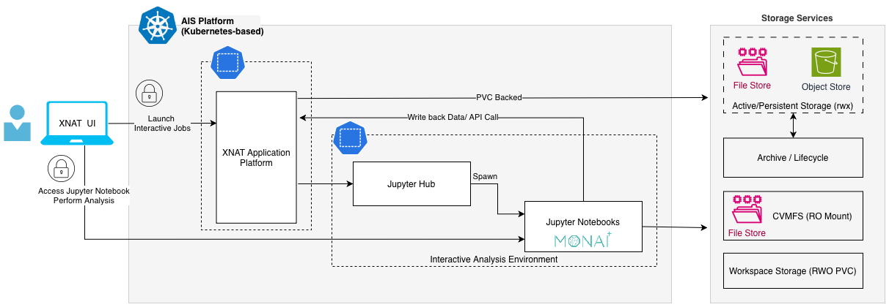
In addition to browser-based annotation through the OHIF viewer, MONAI Label can also be accessed from specialised client applications such as 3D Slicer, QuPath, or CVAT. These tools support advanced annotation and analysis workflows that may not be available through browser-based viewers.
Within the AIS platform, these clients can be provided through researcher workspaces provisioned as Jupyter-based environments. In this deployment pattern, the required viewer applications and MONAI Label components may be bundled into the container image used to launch the notebook workspace. This allows researchers to start interactive annotation sessions directly within their analysis environment without requiring separate platform services for each viewer.
The client applications interact with the MONAI Label service to request model inference and receive AI-assisted annotation results. Imaging data is retrieved from platform-managed storage services or from XNAT, and any derived annotations or outputs can be persisted back to the platform.
This approach enables flexible support for advanced annotation and model development workflows while maintaining MONAI Label as a shared AI service within the AIS platform.
Additional information on MONAI Label
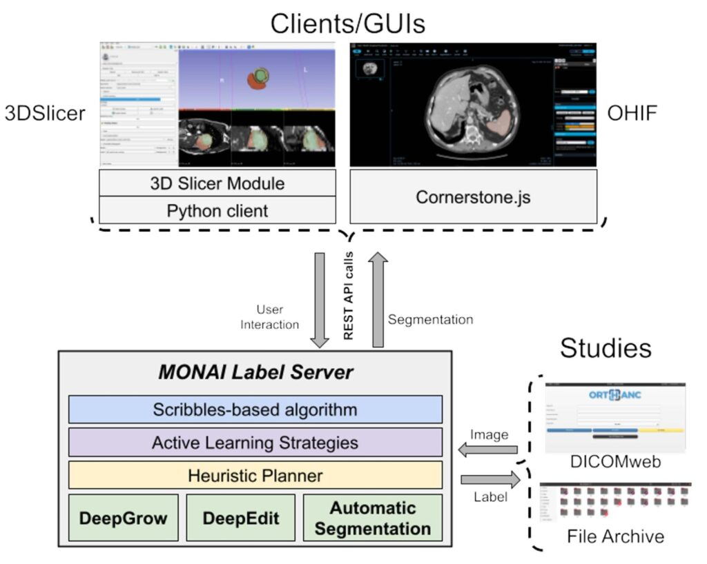
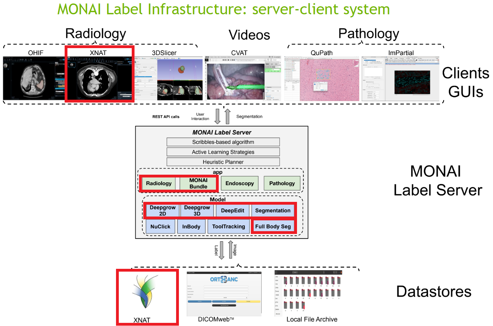
Collaborative AI and Federated Learning
NVFlare
NVFlare is an open-source federated learning platform by NVIDIA that enables multiple sites to collaboratively train a shared AI model without exchanging raw data. In the AIS context, NVFlare supports distributed model training across participating nodes, ensuring that sensitive imaging data remains local while only model updates are shared, thereby aligning with privacy, security, and governance requirements.
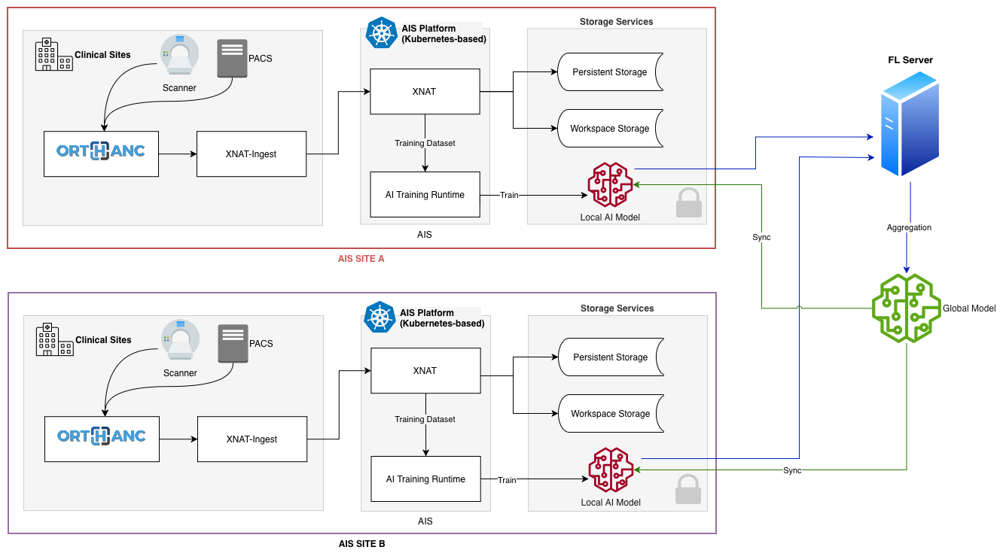
AIS Multisite: Federated Learning Model
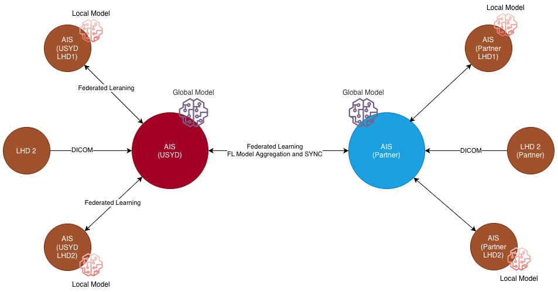
In a federated learning deployment, each participating AIS site hosts a local federated training client that accesses approved local imaging datasets and executes model training within the site boundary. A central federated learning server coordinates training rounds, aggregates model updates received from participating sites, and redistributes the updated global model. Raw imaging data remains within each AIS site; only model updates and training metadata are exchanged across sites.
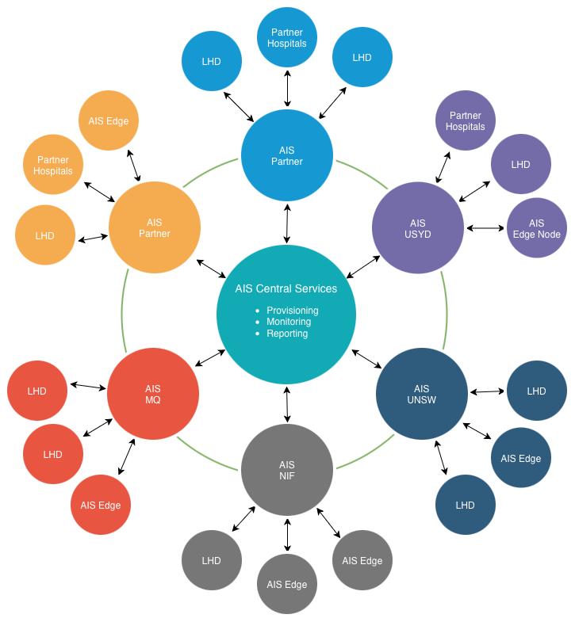
Messaging and Asynchronous Processing Pending
Security Architecture
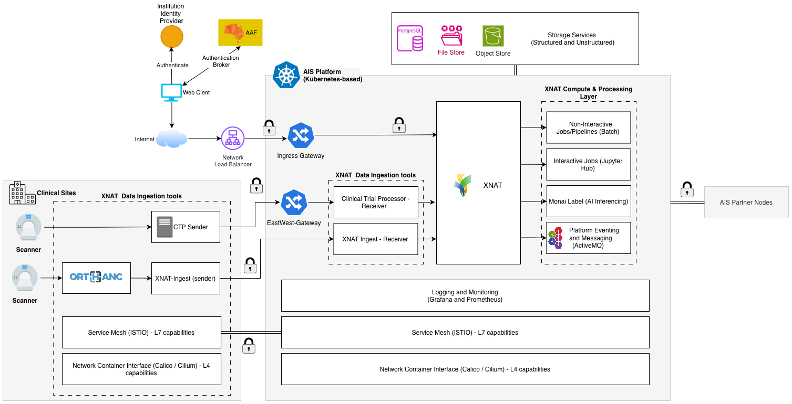
Network Security (Calico / Cilium)
The AIS platform will adopt Project Calico to provide pod-level networking and enforce network segmentation across all clusters. A default-deny security posture will be implemented, where all inter-workload traffic is blocked unless explicitly permitted through policy. Network policies based on namespaces, labels, ports, and protocols will enable fine-grained control of communication paths and prevent unauthorised lateral movement.
These controls will extend across cluster-to-cluster communication, enabling secure connectivity between distributed AIS nodes. Where required, Calico capabilities can also be applied to virtual machines and bare-metal hosts, ensuring consistent network segmentation across Kubernetes and non-Kubernetes environments, including edge deployments.
- AIS recommends adopting Calico as the primary network controller to support hybrid Linux/Windows Kubernetes environments and consistent policy enforcement
- While Cilium offers promising eBPF capabilities, evaluate it for Linux-only environments or future adoption
Service-to-Service Security (Istio)
The AIS platform secures all service-to-service communication using a service mesh implemented with Istio, enabling identity-driven, zero-trust interactions across core and edge environments. All traffic between services is mediated through sidecar proxies and encrypted using mutual TLS (mTLS), with each workload assigned a unique SPIFFE-based identity for authentication. Access between services is controlled through policy-based authorisation, ensuring that only explicitly permitted communication paths are allowed. This approach removes reliance on network location or IP-based trust and provides consistent, secure communication across distributed AIS deployments.
These capabilities extend to both cluster-to-cluster and edge-to-cluster communication, where services interact securely using mTLS through controlled gateways. Istio, in combination with SPIFFE-based workload identity, enables consistent authentication, encryption, and policy enforcement across AIS nodes, edge environments, and heterogeneous compute platforms including Kubernetes, virtual machines, and bare-metal hosts.
Design Decision: Adoption of Istio Service Mesh for AIS
| Category | Requirement / Driver | Why it Matters for AIS | How Istio Addresses It | How Alternatives Fare | Implications / Notes |
|---|---|---|---|---|---|
| Security & Identity | Secure service-to-service communication and consistent identity | AIS services (XNAT, CTP, ingestion pipelines) exchange sensitive imaging and research data and require a consistent zero-trust model | Istio provides automatic mTLS, workload identity, and policy enforcement across services | Linkerd: simpler mTLS, limited policy control; Consul: strong but more suited to hybrid environments; No mesh: relies on inconsistent app-level TLS | Establishes a platform-wide zero-trust security baseline |
| Traffic Management & Workload Isolation | Separation of interactive and high-volume ingestion traffic | AIS must support data-intensive ingestion (CTP, XNAT-Ingest) alongside user-facing workloads without contention | Istio enables fine-grained routing (host/path/subset) and supports separation of ingestion and application traffic paths | Linkerd: limited routing; Consul: moderate; No mesh: coarse ingress-based routing only | Enables controlled ingestion pathways and workload isolation |
| Observability & Operations | End-to-end visibility of service interactions | AIS workflows span multiple services; debugging and optimisation require visibility into traffic flow | Istio provides metrics, tracing, and service topology (Kiali/Jaeger) | Linkerd: lightweight metrics, limited tracing; Consul: moderate; No mesh: fragmented observability | Improves troubleshooting and operational insight |
| Resilience & Change Management | Reliable service communication and safe rollout of changes | Platform services must remain stable and support controlled upgrades | Istio supports retries, timeouts, circuit breaking, and traffic splitting (canary) | Linkerd: basic resilience; Consul: moderate; No mesh: handled at application level | Improves platform reliability and controlled deployment |
| Platform Governance & Extensibility | Centralised control and future scalability (including edge integration) | AIS includes heterogeneous services and evolving architecture, including edge-connected ingestion | Istio provides a centralised control plane for traffic, security, and ingress/egress, supporting future extension to edge and external systems | Linkerd: simpler but limited extensibility; Consul: better for hybrid but less K8s-native; No mesh: high operational overhead | Enables a scalable, governed platform architecture |
AIS recommends adopting Istio as the service mesh to provide a unified control plane for secure service communication, traffic management, observability, and policy enforcement. It enables AIS to support both high-volume ingestion workloads and interactive applications within a consistent, secure, and scalable architecture, while providing capabilities not achievable through simpler service mesh or non-mesh approaches.
While Istio is selected as the current service mesh for AIS, the architecture remains open to incorporating alternative service mesh technologies such as Cilium as they mature. Cilium’s eBPF-based approach offers potential advantages in performance and operational simplicity, and AIS will actively monitor its evolution to determine suitability for future integration or replacement patterns.
Identity & Access (Keycloak, SPIFFE)
AIS adopts a layered identity model separating human identity from workload identity.
Human identity is managed through Keycloak, which acts as the central identity provider for AIS. Keycloak is federated with Australian Access Federation, enabling users to authenticate using institutional credentials. Users are redirected to AAF for login, while Keycloak issues OIDC tokens for access to AIS applications such as XNAT.
Workload identity refers to the cryptographic identity assigned to services and platform components (e.g. XNAT services, XNAT-Ingest receivers, CTP components, JupyterHub, and processing pipelines). This is implemented using SPIFFE-compliant identities provided by Istio, which assigns identities to workloads and enforces mutual TLS (mTLS) for secure service-to-service communication within the platform.
Edge components running on managed hosts (e.g. CTP senders or ingestion nodes) may be onboarded into the Istio mesh to obtain workload identity and communicate securely with in-cluster services. Vendor-controlled devices (e.g. scanners) are authenticated at the platform boundary using alternative mechanisms such as client certificates.
This separation enables secure authentication, identity-based access control, and a zero-trust architecture across AIS.
Data Protection
AIS protects data across its lifecycle by securing data in transit and data at rest.
Data in transit is protected using TLS for external communication and mTLS within the platform, ensuring authenticated and encrypted service-to-service communication.
Data at rest is secured using encryption provided by the underlying storage platforms (e.g. object and file storage), with access controlled through platform services rather than direct storage access.
Access to imaging data is enforced through application-layer controls (e.g. XNAT), ensuring only authorised users and services can retrieve or process data. Temporary processing environments operate on controlled copies of data, with outputs written back to managed storage to maintain integrity and traceability.
Edge Security
External systems, including hospital networks, scanners, and edge gateways, connect to AIS through controlled and secure entry points. Edge connectivity is established using secure protocols such as TLS or mTLS, with optional integration into the service mesh for edge-hosted workloads. External sources are represented as distinct identities, enabling source-level authentication and authorisation. Ingestion pathways are restricted to approved services, ensuring that only validated and governed data flows into the platform.
Together, network and service mesh controls provide a consistent, identity-driven security model across AIS clusters, edge environments, and distributed nodes.
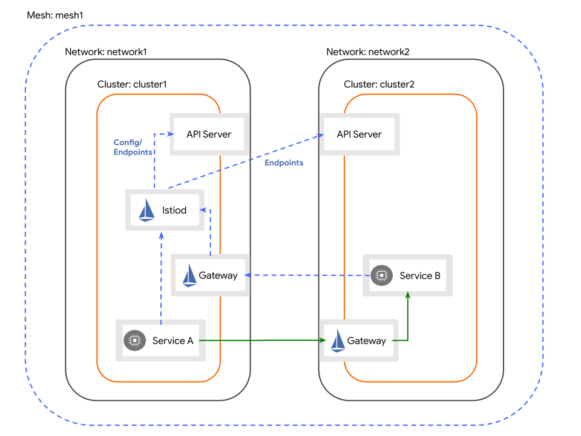
Monitoring and Observability
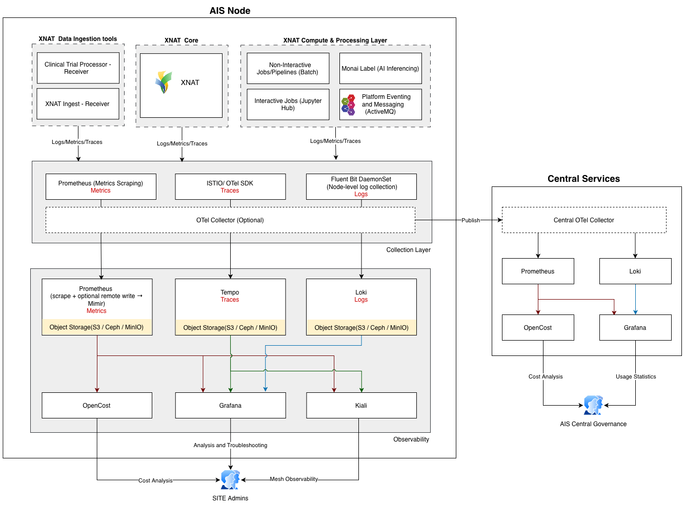
AIS adopts a modern observability approach based on the three pillars: metrics, logs, and traces, providing comprehensive visibility into system behaviour and performance. While monitoring focuses on predefined metrics and known conditions, observability enables explorative investigation and root cause analysis across distributed systems.
Observability Layers in AIS
Observability within AIS operates across two complementary layers:
- Service Mesh Observability. Provides visibility into service-to-service communication using Istio telemetry. This includes traffic flow, latency, error rates, and security (mTLS) between services.
- AIS Platform Observability. Focuses on workload-level visibility across ingestion, processing, storage, and analysis services (e.g., XNAT, pipelines, AI workloads), including logs, metrics, and traces generated by these components.
Observability Pipelines
To achieve observability across both the service mesh and platform layers, AIS should implement dedicated telemetry pipelines for metrics, logs, and traces. These pipelines should collect telemetry from ingestion services, XNAT core, and compute workloads, and route it to scalable backends for storage, correlation, and analysis.
Metrics Pipeline
- Metrics are scraped by Prometheus using a pull-based model
- Prometheus optionally performs remote write to Mimir for long-term storage
- Mimir persists metrics in object storage (S3 / Ceph / MinIO)
Logs Pipeline
- Logs are collected via Fluent Bit DaemonSet at node level
- Logs are forwarded to Loki
- Loki stores log data in object storage
Traces Pipeline
- Traces are generated by:
- Istio Envoy sidecars
- Application instrumentation (OTel SDK)
- Traces are processed via OpenTelemetry Collector (optional but recommended)
- Traces are stored in Tempo, backed by object storage
Observability Backends
- Mimir: metrics storage (Prometheus-compatible, scalable)
- Loki: log aggregation and storage
- Tempo: distributed tracing backend
All backends utilise shared object storage for scalability and cost efficiency.
Visualisation and Analysis
- Grafana
- Unified dashboards for logs, metrics, and traces
- Correlation across observability signals
- Kiali
- Service mesh observability (Istio)
- Visualises service topology and traffic behaviour
- Uses Prometheus metrics and optional trace integration
- OpenCost
- Provides cost visibility based on Prometheus metrics
- Enables cost allocation per project, namespace, or workload
AIS recommends Prometheus for metrics collection and alerting, complemented by Mimir for scalable, long-term metrics storage. For logging, Loki is recommended for aggregation, storage, and querying, with Fluent Bit as the default Kubernetes log collector. For distributed tracing, Tempo is recommended, with the OpenTelemetry Collector serving as the primary trace ingestion and processing pipeline. Grafana provides a unified visualisation layer across metrics, logs, and traces.
AIS recommends Loki as the default logging backend for Kubernetes-based deployments due to its lower operational overhead and strong alignment with the Grafana observability stack. Elasticsearch or OpenSearch may be considered where advanced full-text search, richer analytics, or broader enterprise logging capabilities are required, noting the additional operational complexity.
AIS requires a durable object storage service accessible to Loki, Mimir, and Tempo, providing a common persistence layer for all observability data. Cloud deployments may leverage native object storage services, while on-premises deployments should use an S3-compatible solution such as MinIO or Ceph Object Gateway.
Disaster Recovery
At the core of AIS are medical imaging data and platform metadata. Provided these are securely stored, highly available, and recoverable, the AIS platform itself can be rebuilt with minimal impact using DevSecOps pipelines.
AIS deployments should therefore prioritise:
- Highly available PostgreSQL (metadata store) with backup and point-in-time recovery
- Durable, redundant storage for imaging data (zone- or region-redundant as appropriate)
The platform components (XNAT, CTP, JupyterHub, etc.) should be treated as reproducible and ephemeral, enabling rapid recovery through automated redeployment.
- Deploy AIS across multiple failure domains (e.g., availability zones) using fault-tolerant Kubernetes clusters
- Use DevSecOps pipelines to enable full platform rebuild and recovery
- Ensure the PostgreSQL metadata store is highly available, with backup and point-in-time recovery (PITR)
- Store imaging data on resilient, redundant storage, using zone- or region-level redundancy as appropriate
- Implement backup, lifecycle, and rehydration strategies to support long-term data durability and access
- Optionally support cross-region disaster recovery for critical or high-value deployments
AIS Node Capability and Deployment Model
Defines the capabilities, infrastructure, and standardised platform components required to deploy and operate an AIS node consistently across institutions.
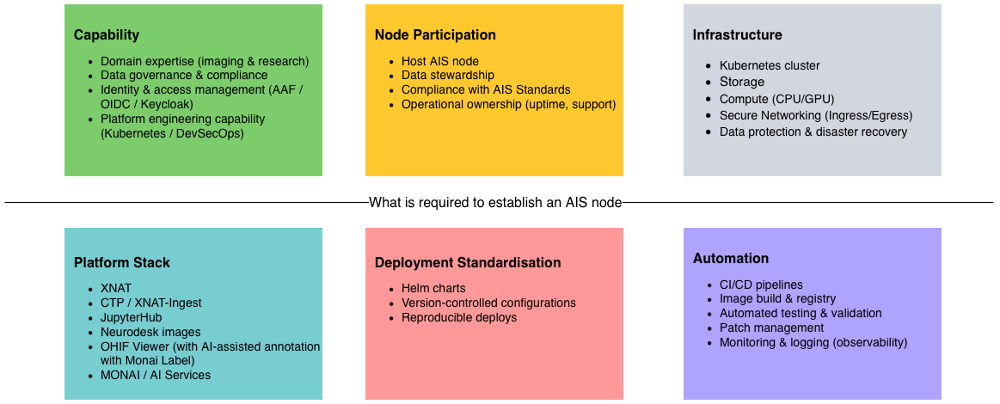